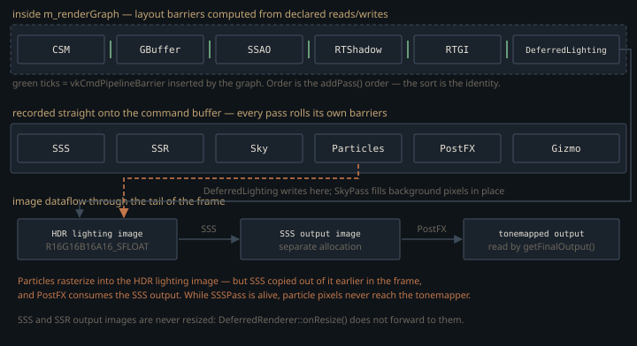

Monograph · Tree · ← Module hub · DeferredRenderer orchestrator
deferred
DeferredRenderer orchestrator
Pass ownership, resize, setScene, graph execute.
A schedule written by hand, checked by a graph
Up to twelve stages run per deferred frame, all recorded into one command buffer by `DeferredRenderer::render`. Six go through `RenderGraph`; the rest go straight onto `cmd`. That split is most of the class, because the graph does far less than its name implies.
It does not schedule. `topologicalSort` copies passes into the execution list in `addPass` order and stops:
// Simple linear ordering for now (passes are added in correct order)ohao/render/graph/render_graph.cpp:570So CSM → GBuffer → SSAO → RTShadow → RTGI → DeferredLighting is a decision made by hand in `render()`, not from declared dependencies. What the graph earns is barriers: `computeBarriers` walks that order tracking each texture's last access and emits a `VkImageMemoryBarrier` at the first read following a write.
declareColorWrite: a promise about a render pass the graph cannot see
Three of the six are graphics passes — CSM, GBuffer, DeferredLighting — each owning its `VkRenderPass` and framebuffers, built before the graph existed; SSAO, RTShadow and RTGI enter through `addComputePass` and own neither. The graph could take those render passes over, through `useColorAttachment`. It uses the other door:
// NOT added to colorAttachments — the pass manages its own VkRenderPassohao/render/graph/render_graph.cpp:154`declareColorWrite` and `declareDepthWrite` record a `ResourceAccess` for barriers and withhold the attachment, so `vulkanRenderPass` stays `VK_NULL_HANDLE` and `execute` invokes the lambda with no render pass open around it — which is what lets the pass begin its own inside.
The price is an invariant nothing checks: the layout handed to `declare*Write` must be the `finalLayout` of the render pass the graph never sees. GBuffer declares `DEPTH_STENCIL_READ_ONLY_OPTIMAL` for depth, which has to match attachment 4 of its five-attachment render pass:
attachments[4].finalLayout = VK_IMAGE_LAYOUT_DEPTH_STENCIL_READ_ONLY_OPTIMAL;ohao/render/deferred/gbuffer_pass.cpp:520Change it, forget the declaration, and nothing fails to build — the next barrier carries an `oldLayout` the image is not in. Of those five attachments only depth, normal and albedo are imported; position and velocity are outside the graph's tracking entirely.
Letting the graph own attachments would mean redrawing every pass into graph-allocated images, trading hand-tuned load ops and subpass dependencies for barrier bookkeeping. Demoting it to a barrier calculator bought the missing shadow-map transition without touching CSM, GBuffer or lighting internals — at the cost of a declared layout kept in sync by discipline.
The layout the graph never learns
`PhysicalTexture::currentLayout` is written at import, reset to `UNDEFINED` by `reset()` each frame, and updated inside `execute` as barriers are issued — never during compilation. Since `compile()` runs `computeBarriers` first, every tracked texture reads as `UNDEFINED` while the barriers are computed.
That stays invisible on the anticipated path: a read following a *write* takes its `oldLayout` from the write's declared layout. A read following another *read* fails `isWrite()` and falls to the second branch, which sources `oldLayout` from the stale field and pairs it with `TOP_OF_PIPE` and an empty access mask:
// Transition from undefinedohao/render/graph/render_graph.cpp:619`gbuffer_normal` is read by SSAO and again by DeferredLighting, so the graph emits exactly that — after the write, immediately before lighting samples it. `UNDEFINED` licenses the driver to discard the contents, the source scope carries no dependency, and both are legal, so validation stays silent.
The barrier that covers one cascade in four
The CSM shadow map is a four-layer array, 2048 × 2048 per cascade, imported through `CSMPass::getShadowMapArrayView()`. `PhysicalTexture` has no layer count, and the barrier the graph emits hardcodes one layer starting at zero:
imageBarrier.subresourceRange.layerCount = 1;ohao/render/graph/render_graph.cpp:447So the `DEPTH_STENCIL_ATTACHMENT_OPTIMAL` → `SHADER_READ_ONLY_OPTIMAL` transition before deferred lighting — the barrier this integration was added to supply — applies to cascade 0 only, while the lighting shader samples the full array view. The fix belongs on `PhysicalTexture`, not here.
The one use frameIndex has is the one it is wrong for
`render()` hands `frameIndex` to every pass `execute` it calls. `PostProcessingPipeline` forwards it to SSAO, bloom and TAA; every leaf implementation throws it away, the parameter commented out in the signature:
void DeferredLightingPass::execute(VkCommandBuffer cmd, uint32_t /*frameIndex*/) {ohao/render/deferred/deferred_lighting_pass.cpp:88The descriptor sets these passes own are indexed by target, not frame — TAA's history pair, bloom's per-mip vector — so there is nothing for a frame index to select. Its one live consumer is `TAAPass::getJitterOffset`, read at the top of `render()` to perturb the projection. There it is the wrong number.
Jitter goes into the matrix, not the camera:
jitteredProj[2][0] += jitter.x;ohao/render/deferred/deferred_renderer.cpp:292GLM matrices are column-major, so `[2][0]` is the entry in row 0, column 2 — call it $P_{02}$. For a right-handed perspective $w_{\text{clip}} = -z_v$ and $P_{02} = 0$, so adding $j_x$ there gives, for a view-space point $(x_v, z_v)$:
The $z_v$ cancels: the shift is a constant $-j_x$ in NDC at every depth. The frustum is sheared, not the camera translated — near and far planes stay put, no parallax appears, only the sample grid moves.
Both the amount and the sequence are off. NDC spans two units across $W$ pixels, so a shift of $j_x$ is $j_x W/2$ pixels; the jitter is a Halton offset $h_x \in [-0.5, 0.5)$ over $W$, landing as $h_x/2$ pixels — half the nominal sub-pixel step:
return m_jitterSequence[sampleIndex] / glm::vec2(m_width, m_height);ohao/render/deferred/taa_pass.cpp:144The sequence also never advances: `TAAPass` builds 16 Halton samples indexed `frameIndex % 16`, but the entry point passes `m_currentFrame`:
m_deferredRenderer->render(cmd, m_currentFrame);ohao/gpu/vulkan/render_dispatch.cpp:113which is the frame-resource ring index, wrapping at `MAX_FRAMES_IN_FLIGHT` = 3:
return (currentFrame + 1) % MAX_FRAMES_IN_FLIGHT;ohao/render/frame/frame_resources.hpp:167Only samples 0, 1 and 2 are ever reached: base-2 offsets $h_x \in \{0, -\tfrac14, +\tfrac14\}$, which after the halving is three positions spanning 0.25 px against 0.45 px for the full sixteen (base-3, 0.28 px against 0.43 px).
The same jitter poisons motion vectors: the GBuffer gets `jitteredProj` while `m_prevViewProj` is stored unjittered at the end of `render()`, and `gbuffer.frag` writes velocity as half the NDC difference of the two — a screen-constant $-j_x/2$ UV bias that changes every frame.
The half of the frame the graph never sees

After `m_renderGraph.execute(cmd)` returns, SSS, SSR, sky, particles, post-processing and gizmos are recorded directly, each rolling its own barriers. `SSSPass` blurs the lit scene into a *separate* image, and `sss_blur.comp` passes non-skin pixels through unchanged — so that image is a full copy of the frame at the moment SSS ran, and post-processing prefers it when it exists:
m_sssPass->getOutputView() : m_lightingPass->getOutputView();ohao/render/deferred/deferred_renderer.cpp:621But sky and particles are recorded *after* SSS and draw into the lighting image, so whatever they write never reaches the tonemapper. Since `deferred_lighting.frag` sets `outColor = vec4(0.0)` wherever the GBuffer position sample is exactly zero, and `sky.frag` fills whatever the GBuffer left at far depth (it discards below 0.9999), that is the whole sky. `onResize` compounds it: it reaches the GBuffer, lighting, post, gizmo, sky and RT-GI passes but never `SSSPass::onResize` or `SSRPass::onResize`, so those images stay at 1920 × 1080.
Ordering constraints that are not obvious
The RT shadow and GI blocks sit above `m_renderGraph.compile()`, and the comment beside them calls that a descriptor deadline. It is not one: `updateDescriptorSets` is a host-side `vkUpdateDescriptorSets`, `VulkanRenderer::renderDeferred` does not submit until after `vkEndCommandBuffer`, and `RTShadowTechnique::getOutput` returns the same persistent `m_shadowMaskView` every frame. The record-time dependency is the push constant: `DeferredLightingPass::execute` zeroes `m_params.flags`, re-derives the RT-shadow bit from `m_rtShadowView`, and pushes it.
m_params.flags |= 32; // RT shadows (bit 5)ohao/render/deferred/deferred_lighting_pass.cpp:171`setRTShadowMask` sets that member; move it below `execute` and the first frame silently falls back to CSM.
The wall clock hides a similar dependency. `m_totalTime` advances in one place only, inside the particle block; RT GI reconstructs a frame counter from it as `m_totalTime * 60.0f`, the sky pass takes it unscaled as a star seed. If `ParticleSystem` fails to initialise — non-fatal — the clock freezes at zero and both lose per-frame variation.
`RenderGraph` here is a barrier calculator, not a scheduler and not a resource manager. Pass order, lifetimes and every barrier outside the six graph passes are hand-written.
Contracts
- The layout passed to `declare*Write` must equal the `finalLayout` of that pass's own `VkRenderPass`, and a declaring pass must never also take a graph-owned attachment. Neither is validated.
- A tracked texture read by two graph passes in a row gets a second barrier with `oldLayout = UNDEFINED` and `TOP_OF_PIPE` as its source: `currentLayout` is never refreshed during compilation.
- `setRTShadowMask` must precede `DeferredLightingPass::execute`, which re-derives the RT-shadow flag bit from `m_rtShadowView` and pushes it. The `vkUpdateDescriptorSets` beside it is host-side and survives the move.
- Anything written into the lighting HDR image after the SSS dispatch never reaches post-processing while `SSSPass` is alive; sky and particles are both in that window.
- `importGraphTextures()` must run after any pass reallocates its images, or the graph holds destroyed `VkImage` handles.
- `frameIndex` is a ring index of period 3, not a monotonic counter, so `TAAPass::getJitterOffset` sees three values.
Source files
ohao/render/graph/render_graph.cppohao/render/deferred/gbuffer_pass.cppohao/render/deferred/deferred_lighting_pass.cppohao/render/deferred/deferred_renderer.cppohao/render/deferred/taa_pass.cppohao/gpu/vulkan/render_dispatch.cppohao/render/frame/frame_resources.hppohao/render/deferred/deferred_renderer.hppParent hub for the full pipeline narrative; this page is the file-level design unit. Sitemap · hover glossary terms anywhere.